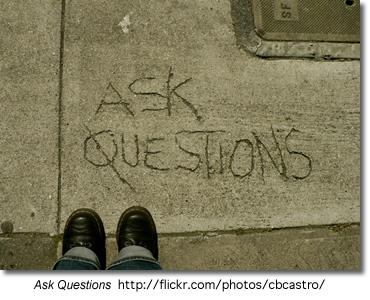
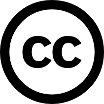

An Information Literacy Curriculum
Instead of asking the question "What technology skills must a students have to face the 21st century?" should we not be asking "What thinking and literacy skills must a students have to face the 21st century?" These skills are not tied to any particular software or technology-type, but rather aim to provide students with the thinking skill and thus the opportunity to succeed no matter what their futures hold.
Preparing to Use Information

The ability to effectively find, use and share information necessitates taking the time to determine what is known about a topic, acquire background knowledge, ask good questions and process information using graphic organizers and mind mapping programs.
This section of the problem-solving or research process covers the following:
- Activating prior knowledge
- Obtaining background information and knowledge by reading, viewing, listening and talking
- Collecting and documenting a wide variety of sources by using print and online tools
- Getting a general overview of topic
- Narrowing and finding focus
What I know - what I need to learn.
Students’ prior knowledge is activated when they are asked
- What they already Know
Students set goals specifying
- What they Want to Learn
After reading and research students discuss and comment on
- What they have Learned
Students use a KWL chart to note their thinking in each of the categories.
Example KWL Chart
Obtaining Background Knowledge
Reading, Listening, Talking, Viewing: Getting the Big Picture
Obtaining background information is a stage that is often neglected in the research process. Students have a great deal of difficulty formulating a solid research question without sufficient knowledge about a topic. This stage of the inquiry process encourages students to become experts on their topic by reading, viewing, listening and talking to people about their topic. Allowing and encouraging sufficient time in this stage of the research process will enable students to narrow and focus on one particular aspect of their topic.
The activities in this stage of the process include collecting resources, examining bibliographies, creating working bibliographies that can be referred to later and reading, viewing, listening and talking to obtain a general overview of the topic. At this time the researcher is looking for key words, dates, people and events that will allow for other connections within the research. Student should read, look for major features and aspects of their topic and write them down.
Students can begin to get an overview of their topic by using general sources such as their textbooks and encyclopedias.
As students become more knowledgeable about their topics they will find it is easier to be focused and to generate good questions that will allow them to delve into further, meaningful research.
Documenting, Organizing and categorizing information:
During this time students should be keeping track of the resources that they have found. There are excellent online citation tools that allow them to document all bibliographic data as they go along and social bookmarking tools are an excellent way to collect, organize, evaluate and share web sites as they are found.
Students can use a social bookmarking tool such as delicious to collect, annotate and save resources that they find on the web on even on the online databases. These bookmarks can be accessed from any computer, from home or school.
The Overview: Encyclopedias and Textbooks
Obtaining an Overview: Using an Encyclopedia and the Textbook
Encyclopedia are excellent tools for gaining a general understanding about a topic. They provide a broader context of the research and in general terms explain what is known about the topic. Classroom textbooks are also very good sources for general information. Especially useful in many textbooks are the bibliographies that can be used to obtain further information.
Three Useful Encyclopedias:
- The Encyclopedia Britannica is freely available to Saskatchewan schools and libraries and offers access to 3 encyclopedias:
- Encyclopedia Britannica for high school students
- Compton's Encyclopedia for middle years Students
- Britannica Elementary for elementary students
*these encyclopedia can only be accessed from within the school building.
- The Canadian Encyclopedia: great Canadian information
- Wikipedia: excellent source for current information especially with regards to technology and pop culture.
For more information on the differences and some of the issues with these encyclopedia read the post from Classroom Tech Tips
And... be sure to check out the student made video, What about Wikipedia, from Springfield High School in Philadelphia.
Finding a Focus
 Once a student has selected a topic and done substantial background reading they should be able to focus on one specific issue related to the topic. It should be a manageable aspect that is not too big nor too small.
Once a student has selected a topic and done substantial background reading they should be able to focus on one specific issue related to the topic. It should be a manageable aspect that is not too big nor too small.
If the focus is too specific than they may not find sufficient resources and if it is too large they may find themselves overwhelmed with information and not able to deal with the topic effectively.
It should be an important problem or a controversy within the topic itself. This does not mean that student should only choose major societal controversies to research but they should reflect on the issues within the field in which they are interested. For example, snow boarding… any type of musical genre… horse care and maintenance…
Controversial issues produce provocative essays, videos, blog postings, and podcasts because they are usually widely written about and they provide an opportunity to test conflicting interpretations, perspectives and values.
Online Citation Tools
Collecting and Documenting Resources
Students should be keeping track of the resources that they find during this stage of their research. If they do this as they research it will save a great deal of time and even frustration as they near the end of the research process.
There are a number of tools that students can use to keep track of the resources they find:
A generic working bibliography(.doc)
Free Online Citation Generators:
Citation Machine,is an interactive web tool designed to assist high school, college, and university students, their teachers, and independent researchers in their effort to respect other people's intellectual properties.
Ottobib, books only.... entering the ISBN provides instant citations in MLA, APA, and Chicago/Turabian styles
NoodleBib Express, Individual citations in MLA or APA format. Full range of citation types.
BibMe, is a free online tool that allows you to create a works cited page or a reference page. You can save your bibliographies and print them.
Social Bookmarking
Social Bookmarking is a web-based service to share Internet bookmarks. The Social bookmarking sites are a popular way to store, classify, share and search links through the practice of tagging techniques on the Internet. (Wikipedia) When you save a bookmark on a Social Bookmarking site you can access the bookmarks anywhere and at anytime. You are not restricted to the favourites or bookmarks on a specific machine.
7 Things you should know about Social Bookmarking from Educause
"7 Things You Should Know About... Social Bookmarking" addresses a community—or social—approach to identifying and organizing information on the Web.
This video from Common Craft illustrates the major concepts involved with Social Bookmarking:
Examples:
- Donna's full set of delicious bookmarks
- Links tagged informationliteracy
There are several Social Bookmarking Services:
Tutorials, videos and step-by-step instructions:
This 2 1/2 minut screencast will show you how to get started using the social bookmarking tool delicious.
David Warlick has prepared two handouts which provide step-by-step instructions on how to create and use delicious bookmarks.
Get started using Delicious with the 'cheat sheet'.
Use Delicious for Social Bookmarking - an excellent set of tips to help you use delicious effectively.
Using Social Bookmarking in the Classroom
All Together Now: Social bookmarking offers a new way to store and share Web sites By Donna DesRoches -- School Library Journal, 1/1/2007
This article illustrates some ways that Social Bookmarking can be used with students.
Assessment
Bookmarking and Social Bookmarking Rubric - this rubric is based on Bloom's Revised Taxonomy.
Tagging
Tagging is an important concept in when using the read/write web. A tag is a (relevant) keyword or term associated with or assigned to a piece of information (like picture, article, or video clip), thus describing the item and enabling keyword-based classification of information it is applied to. (Wikipedia, Tag) Tagging is used to categorize bookmarks, photographs and blog posts more effectively enabling the sharing of online content.
For example: You can also share the bookmarks that you have collected by the URL. You can share all your bookmarks or you can share those that have been assigned a specific tag.
Why Tag
Asking Good Questions
Questions may be the most powerful technology we have ever created" says Jamie McKenzie, author of Beyond Technology: Questioning, Research and the Information Literate School.
In an information and technology rich world it is easy for students to cut and paste the information they find for their fact-based assignments and projects. High School teacher-librarian, Joyce Valenza asks, with basic information so easy to access, shouldn't we now focus our students attention on questions that will challenge them to use information meaningfully - to think, analyze, evaluate and invent?"
Before students can start to ask good questions they need to see it modeled by their teachers. Tips for Teachers: Asking Good Questions, provides some questioning strategies that provoking high-level thinking. Jamie Mackenzie's Questioning Toolkit describes the many different types of questions that can be introduced as early as kindergarten to enable students to have powerful questioning technologies and techniques with them as they arrive in high school.
San Bonito High School's What I Want to Find Out: Questions, describes the difference between 'thin' and 'thick' questions and provides examples of how to turn a thin question into a fat one.
Creating Essential Questions outlines the key components of essential questions
Not All Questions are Created Equal
In his presentation handout, Designing Research Projects that Kids (and Teachers) Love, Doug Johnson outlines four levels of questions.
Questioning Flow (pdf) - a series of questions for middle and high school students to use when reading a selected passage.
Good Questions
The following examples of questions addressing each level are based on Doug Johnson's Good Questions hand-out from his presentation handout, Designing Research Projects that Kids (and Teachers) Love
Level One Question
My research is about a broad topic. I can complete the assignment by using a general reference source such as an encyclopedia.
Example: My research is about the causes of the genocide in Rwanda.
Level Two Question
My research answers a question that helps me narrow the focus of my search. The question may mean that I need to go to various sources to gather enough information to get a reliable answer. The conclusion of the research will ask me to give a supported answer to the question.
Example: Why was Romeo Dallaire unable to inform the world about the genocide in Rwanda?
Level Three Question
My research answers a question of personal relevance. To answer this question I may need to consult not just secondary sources such as magazines, newspapers, books or the Internet, but use primary sources of information such as original surveys, interviews, or source documents.
Example: How did the atrocities of the Rwanda genocide affect Constable xxxx, of North Battleford, during and after his time as a member of the Canadian Peacekeeping forces in Rwanda?
Level Four Question
My research answers a personal question about the topic, and contains information that may be of use to decision-makers as they make policy or distribute funds. The result of my research is a well-supported conclusion that contains a call for action on the part of an organization or government body. There will be a plan to distribute this information.
Example: The Genocide Convention defines genocide as "acts committed with intent to destroy, in whole or in part, a national, ethical, racial or religious group". Since the genocide in Rwanda ethic killings have taken place in Darfur in the Sudan. How might curricular and extra-curricular activities be utilized to motive students at NBCHS to lobby governments to take action and protect global citizens against such evil?
Graphic Organizers
Students who use concept maps in their search process were more likely to make metagcognitive judgments that lead to successful searching. (Carol Gordon)
 Graphic organizers are important tools to help students see how key ideas connect with each other and to organize data into categories.
Graphic organizers are important tools to help students see how key ideas connect with each other and to organize data into categories.
A graphic organizer or mindmap is usually a one-page
form with blank areas for the student to fill in with related ideas and information. Some organizers are very specific; others can be used with many topics. Some of the organizers allow for the information to be written or drawn, allowing students in all grade to use them.
Miguel MGuhlin noted in a blog post how graphic organizers can be used in all stages of finding using and sharing information.
In the preparing phase of the problem-solving or research process graphic organizers can be used to:
|
plan out the problem-solving or research process |
Chain of events Map |
|
idenify prolbem causes and interrelationships between them |
Fishbone Mapping |
| show interactions between events | Cycle |
| explore a topic and identify main ideas and details | Spider Map |
| to identify a problem and consider multiple solutions and possible results |
Problem/Solutio |
Teaching Tip: Jim Burke on using graphic organizers
Get more graphic organizers from EdHelper.com
Technology-based tools for graphic organizers and mind-mapping:
There are many computer tools that allow students to create concept and mind maps. Inspiration and Kidspiration are two of the better known tools. As well, there is a growing number of free open-source and web-based tools available. These tools run on your web browser therefore there is no need to download any additional software.
A very simple tool, ReadWriteThink Webbing Tool l, is perfect to engage younger students (grades 3 - 5) in the mind-mapping and webbing process.
Bubbl.us is a simple and free web application that lets you brainstorm online.
 Gliffy is an online, collaborative mindmapping tool that is simple to use. Features such as copy,paste and undo are all a part of this advanced web application.
Gliffy is an online, collaborative mindmapping tool that is simple to use. Features such as copy,paste and undo are all a part of this advanced web application.
Mindomo is also a free web-base mind mapping tool offering the capabilities of desktop mind mapping software in a Web browser - with no complex software to install or maintain. It's also a whole lot of fun to use!
All of these tools allow you to save your work online or to your desktop, share and work collaboratively on a document with others, and post your images to blogs or wikis.
Concept Maps
Concept maps differ from mindmaps in that they have a specific set of criteria which are used to link concepts. They are more rigid in their structure than free flowing mindmaps but are excellent tools for students to see how the information they are collecting links together. Concept maps are graphical tools for organizing and representing knowledge. They include concepts, usually enclosed in circles or boxes of some type, and relationships between concepts indicated by a connecting line linking two concepts. Words on the line, referred to as linking words or linking phrases, specify the relationship between the two concepts. (The Theory Underlying Concept Maps and How to Construct Them )
The attached document (doc), Skill: The Process of Concept Mapping, outlines the steps in creating a concept map for a Native Studies 30 assignment. The following free desktop programs are useful tools for meeting the concept mapping skill of the Saskatchewan Social Science curriculum objectives.

Freemind allows you to create a mapped image with links to a folding outline.
CMap creates structured linking concept maps.
More about concept maps:
An Introduction to Concept Maps:
- Tips on Making Your Own Concept Maps.
- Kinds of Concept Maps.
- Concept Map Bank.
Concept Maps go to School "We would like to use tools and a methodology that helps children construct knowledge," Tarte said. "Concept maps was the best tool that we found."
Concept Map Wiki - explanation, definitions, types of concept maps, application and reference links - a great resource for everything about concept maps.
Research Planners
Steps to Learning Success: A Research Planner Form
Hands-Up Research Planner (download from Flickr)
Clip useful information.
You can add clippings of text, images and links from web pages to your Google Notebook without ever leaving your browser window.
Organize your notes.
You can create multiple notebooks, divide them into sections, and drag-and-drop your notes to stay organized.
Get access from anywhere.
You can access your Google Notebooks from any computer by using your Google Accounts login.
Publish your notebook.
You can share your Google Notebook with the world by making it public.
You will need to have a Google Account to set up your google notebook. See this screencast to learn how to create your account.
Zotero - this Firefox add-on is perfect for students and professionals who need to keep track of a heavy load of research sites. The add-on stores PDFs, files, images, links and records in any language; automatically saves citations; offers a note taking autosave feature and more. The best part? It all fits neatly in your Firefox browser without getting in the way.
need to keep track of a heavy load of research sites. The add-on stores PDFs, files, images, links and records in any language; automatically saves citations; offers a note taking autosave feature and more. The best part? It all fits neatly in your Firefox browser without getting in the way.
Start Pages
Using Personalized Start Pages for your browser's home page is a tidy and efficient solution to keeping all your favorite and frequently visited resources on the Web on one handy and customizable page. From: Set Up Your Personalized Start Page with Netvibes, Pageflakes or Protopage
Other tools to be Organized
Remember the Milk - manage tasks
Organizing with Start Pages
Start Pages
Your Own Personal Web Page in Moments! Fun with Widgets!
Using Personalized Start Pages for your browser's home page is a tidy and efficient solution for keeping all your favourite and frequently visited resources on the Web on one handy and customizable page. Read more at Set Up Your Personalized Start Page with Netvibes, Pageflakes or Protopage.
Start Pages
NetVibes
Pageflakes
Protopage
View Donna's Protopage
Finding Information
 In this stage of the problem-solving process the researcher locates the resources that contain the answers to the research questions posed during the preparation or planning stage. However, in a technology and information-rich world the temptation is to accept the first three hits on google and not explore the wealth of available resources.
In this stage of the problem-solving process the researcher locates the resources that contain the answers to the research questions posed during the preparation or planning stage. However, in a technology and information-rich world the temptation is to accept the first three hits on google and not explore the wealth of available resources.
Teachers tend to overestimate students ability to locate appropriate resources often intimidated by their apparent ease and understanding of how to use the technology.
It is important that at this stage teachers are aware of the types of resources that tend to appear in the first three hits of a google search -- e.g. Wikipedia and be aware of what they are and how they are created. Students must use sophisticated analytical and critical thinking skills to structure their search and to select relevant, authoritative and credible resources.
As David Warlick says,
So one of the oldies requested was “Finding It on the Net: Being a Digital Detective.” The last time I’d taught that one, I was still introducing folks to Google and boolean searching. But today, it involves so much more. Not just finding the evidence, as a digital detective, but also witnesses. So I included a discussion about blogs and wikis, and using Technorati and Google Blog search to locate and select experts in a given field, and to use BlogPulse to map the frequency of specific conversations. We also looked at some examples of using wikis to tap into the collective knowledge of communities.
When it came to the digital detective seeking evidence, I did an old demo, illustrating a process-approach to conducting searches. I call it SEARCH, which is an acronym for the process. We also discussed the Wikipedia and other social content sites and their effectiveness as a reliable source. This discussion, alas, continues.
Finally, I demo’ed RSS, as a tool for not just finding information, but for training information to find you. So much more to finding information today.
In the finding stage of the problem-solving process graphic organizers can be used to
| determine key words for searching |
Spider Map |
| generate ideas and key words |
Clustering |
The Computer Catalog and the Dewey Decimal System
The computer catalog provides access to the library's collection of books, video and audio recording, magazines, and even to web sites. Most school libraries use the Dewey Decimal system to organize materials on library shelves.
What is the Dewey Decimal System?
Some years ago Mr. Melvil Dewey devised a system of classifying books which is used in many libraries. He choose certain main subjects and numbers, so that all nonfiction books on the same subject would be together on the shelf.
The Story About the Dewey Decimal System of Classification , explains the 10 different numbers used to classify items to be placed on library shelves. At this site you will also find ideas for lesson plans and online quizzes to test your knowledge of the Dewey Decimal Classfication System.
How the Dewey Decimal System Works: shows how the Dewey Decimal system arranges items on the shelves from the general to the specific. Each classification number is broken down into more specific classfications.
"Do we" really know Dewey? is a step-by-step tutorial for grades 4 - 8 about the Dewey Decimal system.
Primary and Secondary Resources
Identifying Primary and Secondary Sources

Primary sources are original, uninterpreted information.

Secondary sources interpret, analyze or summarize.
What is a Primary Source: Explanations and Examples
- What is a primary source? Examples of primary and secondary resources
- Primary and secondary sources: Follow the "click here to learn more about primary resources" to view and participate in a short flash activity on how to identify primary resources.
- This online activity helps you to idenify if a source is primary or secondary
- Canadian Primary Sources: an excellent link from Alberta Education providing overviews, lessons, 'how to read' different primary sources and primary sources links.
- Defining Primary and Secondary Sources: from Collections Canada
- Making History Now: Identifying Primary and Secondary Sources in Canadian History OR How do I know its True? Lesson from the Scarborough Historical Museum
- Primary Sources - This lesson introduces students to primary sources -- what they are, their great variety, and how they can be analyzed. The lesson begins with an activity that helps students understand the historical record. Students then learn techniques for analyzing primary sources. Finally, students apply these techniques to analyze documents about slavery in the United States
Lesson Plans
An Early Canadian Photo Album: A teaching strategy for use with Images Canada Website.
Resources:
Canada in the Making: Primary and Secondary Sources in Government Documents
Popular vs Scholary Resources
|
|
Popular vs Scholarly Resources |

Information sources come in a variety of genres, each marked by specific conventions and target audiences. Magazines and journals are specific examples of popular and scholarly information sources. An online activity at Research 101 reviews the most important characteristics of these publication types including: Who reads them? Who writes them? What's in them? What are some examples of each?
Magazine, Newspaper, Journal: How are they different? Play the minute module, "What's a Journal' to understand the difference between them.
Distinguishing Scholarly Journals from Other Periodicals provides definitions and examples of four different types of periodicals; Scholarly, Substantive News/General Interest/ Popular and Sensational.
Onine Databases
Finding the treasures in the online databases:

A series of seven tutorials to take you through the databases subscribed to by the Saskatchewan Ministry of Education.
l
j
j
Infotrac

Infotrac is a company that creates databases and sells access to the information in them. (A database is an organized, searchable collection of information.) If you are a Living Sky School Division student, you can access Infotrac databases at school. You can access these databases from home via your Saskatchewan Regional Library with your library barcode number and a pin number.
- The information in these databases comes from credible sources that have been fact-checked.
- Most of the Infotrac databases are indexed, which means they are organized so you can do subject searches.
- You can also do keyword and relevance searches in many of the databases.
 HOT TECH TIP
HOT TECH TIP
When you see the  InfoMark® icon on your search results page, this means that you can bookmark the page for future reference, or add it to a list of links on a Web page, blog or wiki page. InfoMarks are ideal for creating reading lists, course reserves, current awareness topic sites, links to periodical or newspaper sources, online/distance learning courses, bibliographies, lesson plans and much more! For more information see the Infomarks web site.
InfoMark® icon on your search results page, this means that you can bookmark the page for future reference, or add it to a list of links on a Web page, blog or wiki page. InfoMarks are ideal for creating reading lists, course reserves, current awareness topic sites, links to periodical or newspaper sources, online/distance learning courses, bibliographies, lesson plans and much more! For more information see the Infomarks web site.
Saskatchewan Multitype Libraries provides databases for all Saskatchewan students:
- Databases for Elementary Students
- Databases for Middle Years Students
- Databases for High School Students
EbscoHost

Novelist K - 8  NoveList K-8 contains information on fiction books for all K-8 grade levels and includes picture books, children's "chapter" books and young adult titles. Updated monthly, NoveList K-8 is your starting place for learning about the books that you and your students need and will want to read.
NoveList K-8 contains information on fiction books for all K-8 grade levels and includes picture books, children's "chapter" books and young adult titles. Updated monthly, NoveList K-8 is your starting place for learning about the books that you and your students need and will want to read.
Novelist  NoveList is a fiction database that provides subject heading access, reviews, annotations, and much more for over 120,000 fiction titles. It also includes Author Read-alikes, Book Discussion Guides, BookTalks, and Feature Articles.
NoveList is a fiction database that provides subject heading access, reviews, annotations, and much more for over 120,000 fiction titles. It also includes Author Read-alikes, Book Discussion Guides, BookTalks, and Feature Articles.
- Novelist Tutorial
- Novelist for Young Readers : a Slide Show Guide for Teachers (ppt)
- EBSCOHost Provides a wonderful page full of support materials, lesson plans and help sheets.
Automobile Repair Reference Center (ARRC) The Auto Repair Reference Center™ database includes automotive repair information supplied by Point 5 Technologies, Inc., under license from Nichols Publishing, the former publisher of Chilton® Information and information from Delphi Integrated Service Solutions. Auto Repair Reference Center contains information on most manufacturers of domestic and imported vehicles.
The Auto Repair Reference Center™ database includes automotive repair information supplied by Point 5 Technologies, Inc., under license from Nichols Publishing, the former publisher of Chilton® Information and information from Delphi Integrated Service Solutions. Auto Repair Reference Center contains information on most manufacturers of domestic and imported vehicles.
- Online Tutorial (Flash)
- Help Sheet (doc)
For Teachers:
Computer Source
Computer Source provides researchers with the latest information and current trends in high technology. This database offers full text for nearly 300 publications and indexing and abstracts for nearly 450 publications.
ERIC
ERIC, the Educational Resource Information Center, contains more than 2,200 digests along with references for additional information and citations and abstracts from over 1,000 educational and education-related journals.
Professional Development Collection
Designed for professional educators, this database provides a highly specialized collection of 520 high quality education journals, including nearly 350 peer-reviewed titles. This database also contains more than 200 educational reports. Professional Development Collection is the most comprehensive collection of full text education journals in the world.
Library, Information Science & Technology Abstracts
Library, Information Science & Technology Abstract (LISTA) indexes more than 600 periodicals, plus books, research reports and proceedings. Subject coverage includes librarianship, classification, cataloging, bibliometrics, online information retrieval, information management and more. Coverage in the database extends back as far as the mid-1960s.
ProQuest

Canadian Newsstand Dailies
This full text database includes the complete available electronic backfile for most newspapers, providing full access to the articles, columns, editorials, and features. Some backfiles date as far back as the 1980s. Canadian Newsstand content is updated daily so researchers always have timely access to new information.
ProQuest Widget
Place a search bar for the ProQuest Databases on a web page.
- overview of the ProQuest Widget.
- instructions
- example - (March 4 - still waiting for IT to install the module which will allow me to embed code)
Discovery Education Streaming
The Discovery Education Streaming Video Site is extremely informative but it also absolutely enhances students’ learning. Today I showed the video, Cells: The Basic Units of Life. It not only adequately covered most of the material in our Science Grade 7 core unit, Basics of Life, but the students really did enjoy the presentation. I’ve looked at many of the videos on this site, and can easily see how they can be effectively utilized to get students energized and engaged in hands-on learning experiences. Video is the perfect medium for students who are auditory or visual learners.
This website is very full of interesting things, and the movie we watched today was outstanding. It gave us great details of everything about our unit, and it is a great website to learn from. Thank you very much; I know my whole class will enjoy this website just as much as me.
Worth viewing is this excellent set of screencasts created by Eldon Germann at Macklin School to help his teachers use Discovery Streaming Video.
Searching the Web
Be CyberSmart: Researching the Internet (11:27) featuring Joyce Valenza, speaks to the resources students require to locate good online information and the skills required to do so - not just from the free web but from the online databases.
They Might be Gurus: Teen Information-Seeking Behavior (pdf) by Joyce Valenza maintains that we must understand how youth connect with information by examining it within four buckets; cognitive, affective, social and physical. Students may have great technical skills but they lack the ability to navigate the web environment effectively.
Locating Resources On the Web
Before students begin searching on the web they should have a clear understanding of the medium in which they are working. Although this tutorial, Welcome to the Web , is meant for primary students middle years and high school teachers should review the points presented to ensure that their students understand things such as the difference between the internet and the world wide web and terminology such as 'browser', hyperlink, etc.
Understanding the difference between search engines and search directories:
| Search Engines |
Search Directories |
|
Search engines create their listings automatically. Search engines crawl the web, then people search through what they have found. |
A directory depends on humans for its listings. You submit a short description to the directory for your entire site, or editors write one for sites they review. A search looks for matches only in the descriptions submitted. |
Power Search Techniques
Successful searching involves two key steps. First, you must have a clear understanding of how to prepare your search.
- You must identify the main concepts in your topic and determine any synonyms, alternate spellings, or variant word forms for the concepts.
- Second, you need to know how to use the various search tools available on the Internet. For example, search engines (e.g., AltaVista) are very different than subject directories (e.g., Yahoo). Even search engines themselves can vary greatly in size, accuracy, features, and flexibility.
Bare Bones 101: A Basic Tutorial On Search The Web provides and excellent overview on everything to do with search engines
If you want search basics go directly to the Bare Bones QuickTips
Web Search Strategies Tutorials
Four Nets for Better Searching
NoodleQuest - a really cool interactive way to discover new search tools based on your research need
Web Searching Glossary -- what words like 'meta-tag' mean?
"The Searchies" A WebQuest
Students are divided into small groups to become expert in one search tool. After examining and testing that tool, they are asked to prepare an advertisement which will sell their search tool's best features to the class so that it may win one of the revered "Searchie Awards." They must also present the small print, or the negative features of the tool. The winners of the Searchies will be determined by the class following the student presentations. Joyce Valenza
Advanced Search Rubric - This is a rubric for the using advanced and boolean searches. This search requires an understanding of the keywords, boolean logic, advanced search features, structuring and refining searches and suitable search engines.
Kids' Search Engines
Kids' Search Engines
|
|
|
|
|
The kid-safe directories below use human beings to filter out sites that might be considered objectionable for viewing by children.
Quintura - a visual search engine is one of the best children's search engines to be found. It is a particularily useful tools for students to use when they begin their research. Typically most students begin with a very broad search topic. Quintura provides a visual look how they can narrow and focus their search.
After entering the search term, Quintura presents a tag cloud of words. Moving the cursor to the word that most closely matches the search term causes the to cloud to rearrange around that term. You glide though the Internet this way, until you have ’steered’ yourself to the best results; even if its something you did not know was there when you began your search.

Other Search Tools
- American Library Association: Great Sites for Kids
- FactMonster
10 Search Engines for Kids (June 2010)
Google Filtering Options
See the SafeSearch help page for instructions on setting up filtering on a permanent or as-needed basis.
Search Tools
Search Engines
Search engines are the World Wide Web's equivalent of a library catalogue. However, because of the enormous size of the Web, no search engine includes everything that is on the Web. Just as there are different ways to search for a book in the library, there are different ways to locate resources on the internet.
How Search Engines Work: A simple animation provides an explanation
How Internet Search Engines Work - a detailed explanation from How Stuff Works
Choose the Best Search Engine for your Information Need
NoodleQuest - a really cool interactive way to discover new search tools based on your research need
Google is the most used search engine on the web. Google For Educators offers great resources (posters, bookmarks, etc) that can be used with both staff and students.
Google Guide - an online interactive tutorial and reference for experienced users, novices, and everyone in between.
Goo-jitsu: A guide to mastery of Google searches
Google Search: A Tutorial Follow the links in this tutorial to understand how to use link, title, domain and host searching and then test your understanding with the practice activities.
Start Your Search Engines: Taming Google (and Other Tips) -To tame Google results and create the most effective search, it pays to know some handy tips.
Create your own custom Google search using Google Custon Search This tool allows you to create a search based on a selection of web sites selected by you. You can place this search on a blog, wiki or web page from which your students can search.
Getting Started Creating a Custom Search Engine (pdf) by Joe Barker ©2007 by the Regents of the University of California, are excellent step-by-step instructions on how to set up you own search engine.
The search below is based on only five websites but provides students a choice of information on a variety of topics. The use of this tool allows teachers to pre-select sites for students to use but encourages the development of good search techniques.

Ask, a search engine arising from the previous, Ask Jeeves, is challenging Google. Give it a good look and see how it compares to Google. Google and Ask.com - a happenstance comparison is a useful comparison from the Librarian in Black.
Other Search Engines
New Search Engines - an overview of three new search engines: Mooter, a clustering search engin, Green Maven, gateway to the Green Web focusing on green, conscious, and sustainable websites, and Boolify - a search engine that visually incorporates boolean searching - very cool!
Search Tools - an extensive page of search tools from Springfield Township High School Virtual Library
Blogdimension : The Web 2.0 Search Engine - a great place to search for blog posts.
Alltop : A blog directory - “digital magazine rack” of the Internet.
How do ya?: Learn how to do anything! ...plan a wedding, write like Kurt Vonneget, paint like Pablo Picasso and fly a plane.
Exalead - an alternative search engine - especially recommended for librarians.
MagSearch - magazine search page that uses the Gigablast custom search feature to search selected online magazines.
Meta-Search Engines
Meta-Search Engines
Searching the Invisble Web
 The "visible web" is what you see in the results pages from general web search engines. It's also what you see in almost all subject directories. The "invisible web" is what you cannot retrieve ("see") in the search results and other links contained in these types of tools. The invisible web is also referred to as the Deep Web .
The "visible web" is what you see in the results pages from general web search engines. It's also what you see in almost all subject directories. The "invisible web" is what you cannot retrieve ("see") in the search results and other links contained in these types of tools. The invisible web is also referred to as the Deep Web .
There are many Web pages that can't be indexed, or information that's available via the Web but isn't accessible by the search engines. This is the stuff of the Invisible Web.Why can't some pages be indexed? The most basic reason is that there are no links pointing to a page that a search engine spider canfollow. Or, a page may be made up of data types that search engines don't index - graphics, CGI scripts, Macromedia flash or PDF files, for example.
But the biggest part of the Invisible Web is made up of information stored in databases. When an indexing spider comes across a database, it's as if it has run smack into the entrance of a massive library with securely bolted doors. Spiders can record the library's address, but can tell you nothing about the books, magazines or other documents it contains. From The Invisible Web by Chris Sherman.
Getting in Deep: Finding the Deep Web When You Need It by Jamie Mckenzie of FNO .
While the Deep Internet provides the most reliable information for many topics, it can do little good for those who do not consult it because it is unknown to them.
Take Kids Deep Inside Where the Deep Web Hides - an excellent post by Vicki Davis which articulates how she intends to expose her students to the deep web.
Beyond Google: The Invisible Web - FAQ's
Invisible or Deep Web: What it is, Why it exists, How to find it, and Its inherent ambiguity - a tutorial. - an excellent collection of tools to search the invisible web.
Search Tools for the Invisible Web
Educators who want to teach their students about the buried treasures of the Web should prepare a list—or a page on their library's Web site—of the most effective Hidden Web tools.
-
Chat Room: The Invisible Web - How to find the hidden resources that most search tools skip over.
- The Invisible Web Databases from 21st Century Literacies - this list includes a wide range of curriculum/subject related databases.
-
Research Beyond Google: 119 Authoritative, Invisible, and Comprehensive Resource
- Using Deep Search Engines for Academic and Scholarly Research - another great list of tools that provide access to hiddent content on the web.
-
Librarians Internet Index - a searchable, annotated subject directory of more than 11,000 Internet resources selected and evaluated by librarians for their usefulness to users of public libraries.
-
Complete Planet
70,000+ searchable databases and specialty search engines. -
Infomine Multiple Database Search - an "academic" search engine, focusing on scholarly resource collections, electronic journals and books, online library card catalogs, and directories of researchers. Unlike many Invisible Web search tools, Infomine allows simultaneous searching of multiple databases.
-
Scirus - a science search engine dedicated to only searching science-specific content. At the time of this writing, Scirus searches over 250 million science-specific web pages, filtering out those results that are not science related in order for you, the user, to quickly pinpoint what it is that you're looking for.
-
99 Resources to Research & Mine the Invisible Web - an annotated list of sites, tools and articles categorized as search engines, databases, catalogs,directories, social media, and guides.
Canadian Search Tools for the Invisible Web
- Canadian Institute for Health Information - search by data collections, research reports, quick stats, and more.
Using Google to Search the Invisible Web
If your students are going to use Google they can use it to locate searchable databases by searching a subject term and the word "database". If the database uses the word database in its own pages, you are likely to find it in Google and it is more likely to contain information that is useful to your students
For example a search for the terms minerals + "data base" turned up two great data base resources without the commercial minerals resources.
(From: Deep Inside the Invisible Web )
Copyright Friendly Music and Image Search Tools
Stay Online: Find LEGAL Images and Videos with Creative Commons Search (and Download YouTube, etc, with Zamzar.com) by Clay Burell of Beyond School
 A number of copyright-friendly archives are now available. The sources include government archives offering liberal use, media in the public domain, and collections of material posted by their creators with the definite purpose of sharing their work or seeing it grow and mix. Creative Commons is a license that allows creators to maintain a copyright while allowing users the right to reuse, reproduce, and change software or files.
A number of copyright-friendly archives are now available. The sources include government archives offering liberal use, media in the public domain, and collections of material posted by their creators with the definite purpose of sharing their work or seeing it grow and mix. Creative Commons is a license that allows creators to maintain a copyright while allowing users the right to reuse, reproduce, and change software or files.
Joyce Valenza posted the following list of her personal favourite copyright friendly archives:
Images

- Flickr's Creative Commons Pool: Browse through the images provided by Flickr users who have chosen to offer their work under a Creative Commons license
- openphoto: Free stock images. Use categories on the right to browse or click on search in the top bar
- US Government Photos and Multimedia Most materials in the public domain, but read the disclaimers.
- Wikimedia Commons: a database of 1,815,754 freely usable media files to which anyone can contribute.
- Common Content: an open catalog of Creative Commons licensed content
- Creative Commons Search Flickr, Yahoo!, Google, OWL Music Search, SpinXpress, and BlipTV to "find Creative Commons-licensed media that you can legally share and reuse for free"
- Pics4Learning Copyright friendly images for education
- MorgueFile "provides the public and creative community with free raw photo materials"
-
flickrcc A great photo sharing site for creative commons photos. You can also edit photos from within the site
- Flickr Storm - another Flickr search tool
10 Places to Find Free Images Online and Make Your Content More Linkable
There are some differences in the types of images that are available online, like some images are free and others are rights protected. Understanding the differences, as well as ten of the most popular places to find free images online, allows you to make your website more attractive.
Images Canada
All images can be reproduced, in print and/or digital format, for non-commercial purposes. The images must not be altered or manipulated in any way and proper " Credit " credit must accompany the images.
Internet for Image Searching
An excellent tutorial on how to use the Internet to find copyright cleared images for your work, quickly and efficiently.
Music
- Shambles: Sound Effects and Music Comprehensive portal collection by Chris Smith
- Educational CyberPlayGround: Get Music Downloads Links to portals and useful guidance
- Open Source Audio from the Internet Archive
- Incompetech Royalty Free Music
- Opsound Copyright friendly sound "Listeners are invited to download, share, remix, and reimagine."
- Partners in Rhyme: Free Sound Effects
- Partners in Rhyme: Free Music Loops
- Soundzabound Music Library
- OneMusic - from the BBC - Over 1,000 free music samples
- MusOpen - an online music library of copyright free music (public domain
- Freesound The Freesound Project is a collaborative database of Creative Commons licensed sounds. Freesound focusses only on sound, not songs.
Video, Images, Music and Sound
archive.org The Internet Archive is building a digital library of Internet sites and other cultural artifacts in digital form. Freely download images, movies, music
It is essential to check individual licensing notices
before publishing on the Web or broadcasting!
Visual Search Engines
Visual Search Engines
Standard search engines are great for finding individual Web pages to answer specific questions. But their results lists do not help you to understand a field in general. A visual search engine clusters results, and in doing so gives you a better overview of a field. These are useful tools that can be used to help students narrow and focus their searches.
- VisuWords - online graphical dictionary — Look up words to find their meanings and associations with other words and concepts. Produce diagrams reminiscent of a neural net. Learn how words associate.

After you enter your search query, you are presented with a tag cloud of words that looks like a just-finished Scrabble game. Moving your cursor to the word that most closely matches what you are looking for causes the to cloud to rearrange around that term. You glide though the Internet this way, until you have ’steered’ yourself to the best results; even if its something you did not know was there when you began your search.
There are other visual search tools including searchChrystal , Grokker , Clusty and KartOO - the following articles provide a review and a comparison of each.
My favourite of the search engines reviewed is Quintera - the adult search engine. It was the least confusing to view and to follow. I quite like the way it which it displayed the results for the term on which I hovered almost immediately on the right hand side of the page.
Training Information to Find You
Information today exists in such quantities that students need to learn the many tools that faciliate information arriving on their desktops rather than continually searching Google. Tools such as Google Alerts, RSS and SocialBookmarking can faciliate instantaneous access to pertinent information.
Guides: RSS Feeds - from the BBC for children a very simple explanation of RSS and how to start using it.
The following are two excellent post from Sue Walters at the Edublogger demonstrating the importance of rss:
Google Alerts
Bloglines
Google Reader
Delicious sharing features
Using Information

At this stage of the research process students are critically and analytically working with the information they have found. This stage requires a great deal of teacher support, modeling and scaffolding, as this is a very frustrating stage for students. Without critical supports for students at this stage they will resort to copying and pasting especially when they encounter information that is beyond their reading comprehension level.
During this phase of the information problem-solving process students need the skills to:
- Evaluate Information
- Analyze and synthesize information
- Organize information
- Use information ethically and safely
At this stage of the research process students have progressed to working with the information found within the resources they located in the previous stage but they still continue to use many of the tools and skills used at previous stages of the process such as, graphic organizers , social bookmarking and research planners .
Evaluating Information
...the presence of inaccurate and biased information on the Internet is not our primary problem.
The information and points of view have not really changed, it is the tools that have changed.
David Warlick in Evaluating Internet-Based Information: A Goals-Based Approach
Evaluating Information
- Use specific criteria to determine the legitimacy of sources
- Evaluate resources based on relevance and reading level
- Determine different points of view presented in two pieces of information on the same topic
- Distinguish between bias, opinion and fact
In the article Critical Evaluation in the Collaborative Era, Kathy Schrock asks How do we teach critical evaluation of information when we have no way to determine authority? The focus in this article is on the issues and difficulties that arise in determining the 'research worthiness' of information in a wiki world.
Articles and Checklists
Better Read That Again: Web Hoaxes and Misinformation
This article differentiates and discusses differenent kinds of misinformation: counterfeit sites, parodies and spoofs, ficticious, questionable, malicious, product sites and subject specific misinformation sites. It also offers a number of sites that track internet misinformation including Snopes.
BBC interview with Tara Brabazon - "Google is white bread for the mind" - article in Times Online. - both of these may be time sensitive and therefore at some point the links may be broken.
Google is “white bread for the mind”, and the internet is producing a generation of students who survive on a diet of unreliable information
Teacher Helpers: Critical Evaluation Information - a collection of articles and evaluation checklists available from Kathy Schrock
Popular MicroModules on Evaluation from the 21st Century Information Fluency Project:
|
Hints About Print
This is an interactive tool that takes students (grade 3 - 5) through a processing of determining if a non-fction book is the best resource for their research. Once students have viewed the online demo they can print-out a fillable PDF and evaluate their own non-fiction book.
Quality Information Checklist - uses imaginary examples, quizzes and puzzles to allow young people (grades 3 - 7) explore for themselves the concepts around information quality. Many of the examples are health related, but the concepts can be used with any subjects that require information skills.
Fact or Folly: Evaluating Online Information - from Media Awareness Network
Evaluating Web Pages: Techniques to Apply & Questions to Ask - uses critical thinking skills, a series of specific questions, and techniques to provide a strategy for determining if a website can be trusted.
Online Evaluation Tools
Digital Index Card - a web-based tool for collecting and evaluating Net information. It consists of six forms that ask questions of the researcher, all designed to collect content and to help the researcher make decisions about the appropriateness of the information. As student input pertinent information about the source they asked questions which relate back to their research goal e.g. What aspect(s) of the author's or publishing organization's background helps you accomplish your goal?
Evaluation Wizard from 21 Century Information Fluencey - as students enter their evaluation notes for author, publisher, objectivity, date, accurancy and evidence they are provided with prompts about what to look for within the web site they are evaluating.
A WebQuest about Evaluating Web Sites : from Joyce Valenza for grade 9 - 12 students (Note - last updated in 2001 - links may have to be updated)
Applying Reading Comprehension Strategies to the Evaluation Process
 Critical Evaluation: Scary Research Findings Prompt New Internet Reading Strategies
Critical Evaluation: Scary Research Findings Prompt New Internet Reading Strategies
Julie Coiro presents five activities associated with the online reading tasks that research suggests are particularly challenging for students who read to learn on the Internet. Each activity is accompanied with pertinent questions and relevant web sites.
- evaluating relevancy - reading search results
- evaluating reliability- investigating the author
- evaluating reliability - investigating the validity of the web site
- detecting bias - separating fact from opinion
- detecting bias - developing a healthy skeptism
A Think Aloud to Model Online Reading demonstrates how to use reading comprehension strategies to read, question and ultimately evaluate the relevance and validity of a web page. From: 21 Century Literacies
Researching a Web Page - using Treaty 6 students respond to a number of questions which focus their reading on each part of the Web page. (From - Elgin Wyatt, NBCHS)
From Alan November
Our students must understand the architecture of the internet to be able to effectively evaluate the information they find.
How to Read a Web Address - The first step in learning the grammar of the Internet is to read URLs closely.
WayBack Machine - Want to see the history of web site? Take a trip through time with the Wayback Machine.
How to Find the Publisher of a Website using EasyWhoIs
Beyond the Checklist - using contextual analysis to evaluate web pages
 Student Web Page Evaluation - a blog post that describes a successful lesson in which the teacher asks the students to use the comparison method. This requires requires the researcher to compare different sources and different types of sources in order to select the most useful.
Student Web Page Evaluation - a blog post that describes a successful lesson in which the teacher asks the students to use the comparison method. This requires requires the researcher to compare different sources and different types of sources in order to select the most useful.
Diagram from U Arizona Information Literacy: Evaluating Web Resources
Evaluating Blogs and Wikis
 |
 |
21 Century Information Fluency presents a number of resources that can be used to understand how to evaluate web 2.0 resources especially blogs.
A podcast (10:36 minutes) with Joyce Valenza points to key tips and ideas about what to look for when using blogs for research.
In Joyce Valenza on Evaluating Blogs Joyce says,
Blogs are essentially primary sources and can provide lively insights and perspectives not documented by traditional sources. They compare in some ways to a traditional interview, with the speaker controlling the questions. Ripe for essays and debate, blogs present not only the traditional two sides of an issue, but the potentially thousands of takes. And those takes take less time to appear than documents forced through the traditional publishing or peer review process. Blogs allow scholars and experts written opportunities to loosen their ties and engage in lively conversation.
This article from the 21Century Fluency Project provides an overview of the key things to look for in a blog as well as a well designed rubric for evaluating the legitimacy and usefulness of a blog.
It is essential to consider who is creating all this information and whether there is any real substance to back up the ideas and opinions that anyone can easily publish on the Internet.
Evaluating Wikis from: Information Fluency Meets Web 2.0 PowerPoint by Joyce Valenza
- What is the purpose of the collaborative project and who began it?
- How many people appear to be involved in editing the wiki? Does it seem that the information collected is improved by having a variety of participants? How heavily edited were the pages you plan to use?
- How rich is the wiki? How many pages does it contain?
- Does the project appear to be alive? Are folks continuing to edit it?
- Does the information appear accurate? Can I validate it in other sources?
Evaluating email

How to recognize an email hoax
The following five scenarios describe most email hoaxes:
- A warning of a new virus that you should send on to everyone you know.
- A warning of a scam that you should send on to everyone you know.
- A petition to help the needy or some cause that wants you to foward it on to those who might be interested.
- A get-rich-quick scheme that claims if you forward on the message you'll receive money for each time it's forwarded.
- A claim that for each email sent someone in need will be helped by another organization.
Good email practices include:
- don't open files from strangers or files that you aren't
- expecting, don't give out your email or IM address or personal
- information, don't reply to spam,
- delete junk e-mails messages without opening them,
- don't forward chain e-mail messages,
- don't buy things advertised through email.
Tips for dealing with email hoaxes and to avoid viruses.
Snopes the best source for factual information about rumors
Truth or Fiction.com - your email reality check
Hoax-Slayer is dedicated to debunking email hoaxes, thwarting Internet scammers, combating spam, and educating web users about email and Internet security issues.
Lesson Plan: Don't be fooled by a photograph from National Geographic
In this lesson, students will study images that we altered digitally, to create a desired effect. Students will discuss how a photograph conveys information, and how changing that photograph can change its message. This lesson plan is based on the National Geographic News story, "Shark 'Photo of the Year' Is E-Mail Hoax," which covers an urban legend based on a doctored photograph.
Organizing Information

Organizing information
- Utilize a variety of visual organizers
- Take notes using point form and paraphrasing
- Create an outline
- Tag and describe bookmarks using a social bookmarking tool
Taking Notes
Note Cards - examples
Taking Notes - using the notecard method
The following two links are from Debbie Abilock's NoodleTools - many ideas and links for teaching students to paraphrase, quote and summarize.

Research Building Blocks: Notes, Quotes, and Fact Fragments (Grade 3 - 5)
The students learn the importance of finding the words in sentences and paragraphs that contain the facts they need for compiling their research. The students then move to putting those notes into their own words, avoiding plagiarism. Embedded in this lesson is an online activity where students can participate in the fact finding process.
Online Note-taking tools
ReadWriteThink Notetaker (Grade 3 - 5)
This hierarchical outlining tool allows students to organize up to five levels of information for reading and writing activities. During or after reading, the Notetaker can be used to compile and organize reading notes, research, and related ideas. During the writing process, students can use the tool to organize their information and plan texts in the prewriting stage and to review and structure their ideas during writing and revision.
Ubernotes - This web-based application focuses on just one thing; helping you write and then find your notes. A review of this application can be found at School Library Journal.
Best4C - online diagram tool that allows you to create, edit and share charts
Google Notebook
Clip and collect information as you browse the web:
- Clip useful information.
You can add clippings of text, images and links from web pages to your Google Notebook without ever leaving your browser window. - Organize your notes.
You can create multiple notebooks, divide them into sections, and drag-and-drop your notes to stay organized. - Get access from anywhere.
You can access your Google Notebooks from any computer by using your Google Accounts login. - Publish your notebook.
You can share your Google Notebook with the world by making it public.
NoteStar from 4Teachers
Designed specifically for students in grade 4 - 12 NoteStar is an Internet utility to assist in the preparation of research papers. Teachers and students can set up research projects with topics and sub-topics. Students may then take advantage of NoteStar's many features to collect and organize their notes and prepare their bibliography page.
The article Hitting the Books in McGill Reporter, Jan 2008 recommends the following two tools:
MyNoteIt
A note-taking tool for students that allows you to take notes directly in the web interface, or upload existing Word or OpenOffice documents, scanned images, handwritten notes and audio files into a searchable database. Also features an assignment calendar, a to-do list, a grade-tracker and add-ons for Facebook and cellphones.
Notecentric
An online note-taking application for Facebook. Its capabilities seem to be more limited than mynoteIT, but it has the advantage of operating through one of the best-known destinations on the web.
Creating the Outline
Using Outlines - this article discusses how to use outlines at the different states of the research including the working outline, the pre-writing outline and creating an outline to hand in.
Sythesizing Information: The Thesis
 Thesis...
Thesis...
...point of view of the author
...a premise to be maintained or proved
...the purpose of the research
...the basic argument
...an intellectual proposition
...the theme of the whole piece
...A proposition supported by research
What is a Thesis? - from Joyce Valenza the attributes of a good thesis, some great examples and a collection of links to other resources about developing a thesis.
Thesis Builder and Online Outline
Using Thesis Statements - this article debunks several myths about thesis statements
What's the Fuss About the Thesis? - a student made video about how to construct a thesis.
Teaching the process of design (or making student video projects interesting) - in this blog post the author discusses the importance of a thesis, a central idea, around which all design decisions are made.
Once a thesis is decided on, a concept for the production is formed that expresses the thesis and every design decision made during the production serves the thesis. This gives directors (or designers, or actors) a basic structure on which to base their production. Used correctly, a thesis can be the most powerful tool in a designer’s arsenal.
Analysis: Using evidence to support the thesis
Once in place the author then needs to provide the necessary evidence and accompaning citations to support the thesis.
Ethical Use of Information
Understanding Copyright
At what point do concerns about safety become a fence preventing our students from participating in an increasingly flat world? Putting the ‘social’ into social networks allows us to freely exchange information. But with the free exchange of information comes the responsibility of how we share it, and how we give credit to the author of that information.
Check out this video, “A Fair(y) Use Tale” and learn some history of copyright
In the school library and classroom, we are often faced with the copyright challenges of when it is acceptable to copy something and how much of an item [book, website, music etc] we can copy. Faced with declining budgets and little time, we are tempted to go ahead and make the copies. But with the advent of file sharing, downloading and RSS, we must acknowledge and teach the ethics of information gathering and sharing.
Background on Canadian Copyright Legislation
Copyright Matters (the orange little booklet you should all have in your school)
Internet Citizenship from Media Awareness Network - overview and a list of links with more information about copyright and plagiarism.
Canadian Copyright Information - a set of links from Manitoba Education
Copyright Confusion
The Cost of Copyright Confusion for Media Literacy (pdf - 17 pages)
From the Executive Summary:
The fundamental goals of media literacy education—to cultivate critical thinking about media and its role in culture and society and to strengthen creative communication skills—are compromised by unnecessary copyright restrictions and lack of understanding about copyright law, as interviews with dozens of teachers and makers of media literacy curriculum materials showed.
The Generational Divide in Copyright Morality - David Pogue of the New York Times describes a discussion on copyright morality with college students:
Recently, however, I spoke at a college. It was the first time I’d ever addressed an audience of 100 percent young people. And the demonstration bombed.
In an auditorium of 500, no matter how far my questions went down that garden path, maybe two hands went up. I just could not find a spot on the spectrum that would trigger these kids’ morality alarm. They listened to each example, looking at me like I was nuts.
Finally, with mock exasperation, I said, “O.K., let’s try one that’s a little less complicated: You want a movie or an album. You don’t want to pay for it. So you download it.”
There it was: the bald-faced, worst-case example, without any nuance or mitigating factors whatsoever.
“Who thinks that might be wrong?”
Two hands out of 500.
Doug Johnson in his post, Paradox Land , makes some recommendations for changing the focus of how we teach about copyright and intelletual property because "The mindset that “if we don’t know for sure, don’t do it” does not fit the needs of either students or their teachers. Changes I am thinking about recommending include:
- Changing the focus of copyright instruction from what is forbidden to what is permitted.
- When there is doubt, err on the side of the user. (Are we being "hyper-compliant"?)
- Ask the higher ethical questions when the law seems to make little sense. (Look where it got Socrates. Well, yeah, there was that hemlock bit...)
- Teach copyright from the point of view of the producer, as well as the consumer. (Does having others using your work without authorization or remuneration change your perception of intellectual property issues?)
How to legally use images, music and videos can be found on the Copyright Friendly Images and Music Search Tools Page.
Citation Tools and Generators
I don't do windows, I don't do floors and I don't do bibliographies!
I have a very strong bias against the expectation that students will create bibliographies because I don't always understand the rationale behind this requirement. Bibliographies are simply a list of resources consulted or used in the process of research. They remain unconnected to the finished product. When asked teachers respond by saying that they require bibliographies to prevent plagairism. Hmmm... in my experience this has never worked.
I would like to say "ban bibliographies" much the same way Joyce Valenza says we should ban "topical research". However, that is not to say that I don't believe that students should be held accountable for the resources that they use to find information. But instead of the focus on bibliographies the focus should be on the citations that students use to support their point of view. This requires students to search for the experts and to find the best possible information. The Works Cited page (MLA) or the Reference page (APA) merely becomes the full documentation of the items they have cited within their product.
Why to cite: (posted in LM_Net)
To show that one did research
To defend one's work
To be able to return to the source(s)
To share sources with others
To get a better grade
To give credit to the source(s)
To avoid plagiarism
There are several good sites that provide teachers and students with background, overviews and tutorials on citing and proper formating for works cited and reference pages. One of the best is found at the Online Writing Lab (OWL) at Purdue University. Students will find their formatting guides for both MLA and APA very user friendly and easily understood.
Citing your Sources: A Research Tutorial - a very well done powerpoint that demonstrates the two main citation formats, MLA and APA.
MLA (Modern Languages Association)
MLA (Modern Language Association) style is most commonly used to write papers and cite sources within the liberal arts and humanities. This resource, updated to reflect the MLA Handbook for Writers of Research Papers (6th ed.) and the MLA Style Manual and Guide to Scholarly Publishing (2nd ed.), offers examples for the general format of MLA research papers, in-text citations, endnotes/footnotes, and the Works Cited page.
MLA Formatting and Style Guide - this guide includes....
APA (American Psychological Association)
APA Formatting and Style Guide
APA is most commonly used to cite sources within the social sciences. This guide is revised according to the 5th edition of the APA manual and offers examples for the general format of APA research papers, in-text citations, endnotes/footnotes, and the reference page.
Chicago Style
Citation Tools
As part of my Grad program I attended a University library workshop. I was totally thrilled with not only the overview the databases, but with the introduction to RefWorks. I am able to mark items during my search in the databases or in the card catalog and then later export to RefWorks, which creates a completely formatted and alphabetized reference page for me. Too Cool! There is even an accompanying program which I can use to automatically insert the in-text citation into my paper. Wow! This makes me wonder about how extensively we need to teach students about the correct formatting of a bibliography page. Why not just use a citation generator - there are several available.
- Landmark Son of Citation Machine
- BibMe
- NoodleBib Express
- EasyBib
- OttoBib (books only)
- Zotero
Zotero is an easy-to-use yet powerful research tool that helps you gather, organize, and analyze sources (citations, full texts, web pages, images, and other objects), and lets you share the results of your research in a variety of ways. An extension to the popular open-source web browser Firefox, Zotero includes the best parts of older reference manager software (like EndNote)—the ability to store author, title, and publication fields and to export that information as formatted references—and the best parts of modern software and web applications (like iTunes and del.icio.us), such as the ability to interact, tag, and search in advanced ways.
Levels of Citation and Documentation for Elementary Students
Combatting Plagiarism
What is Plagiarism?
Plagiarism-Proofing Assignments - 14 points from Doug Johnson
Our time as educators is better spent creating assignments, especially those that involve research, that minimize the likelihood of plagiarism in the first place. Rather than making assignments that can be easily plagiarized and then contriving methods for detecting or reducing copying, why not do a little work upfront to design projects that require original, thoughtful research?
Plagiarism from the Nauset Public Schools Research and Style Manual uses revisions from a passage to demonstrate how plagiarism occurs and how it can be prevented by taking meaningful notes and having a point of view which needs to be supported.
Using Portfolios to Avoid Plagiarism in Your Classes
Creative Commons
Creative Commons
Creative Commons defines the spectrum of possibilities between full copyright — all rights reserved — and the public domain — no rights reserved. Our licenses help you keep your copyright while inviting certain uses of your work — a “some rights reserved” copyright.
Students should not only be encouraged to look for and respect the licenses of others but to use creative commons licensing in their own works.
Creative Commons in K - 12 Education This article begins by outlining U.S. Copyright Law but then goes on to explain how to obtain a Creative Commons license and some ways to find resources that are licensed with Creative Commons.
Video and Audio Public Performance Rights
 Public Performance Rights for Non-Feature Video/DVDs
Public Performance Rights for Non-Feature Video/DVDs
When feature and non-feature videos or DVDs are played in a "domestic" setting, such as a home, only a home-use license is required. However, when a non-feature video or DVD is shown in a "public" setting, such as a school, then a public performance license is necessitated. When ordering a non-feature video or DVD for use in a school setting, your invoice to the supplier should specify that you are acquiring public performance rights to use this item in a school setting.
Public Performance Rights Licensing for Feature Films
In order to show feature films legally in a classroom, a school or school division must acquire a public performance rights license.
Living Sky School Divison has purchased the following licensing for all schools within the division:
- Represents Alliance Atlantis, Walt Disney Pictures, Universal Studios, MGM Studios, United Artists, Nickelodeon, Miramax, Pixar, and more.
- License covers video from rental stores and public libraries, and purchased (in Canada) home-use video/DVD.
- The ACF license does not cover VHS/DVD purchased from the USA. Video/DVD can be purchased from Canadian subsidiaries, i.e. Blockbuster.ca or Amazon.ca, as long as the studio is included in the ACF license.
Visual Education Centre (VEC) / Criterion Pictures
- Represents Warner Brothers, Columbia Pictures, 20th Century Fox, Lions Gate, Sony Pictures, Dreamworks, Paramount Pictures and more.
- Covers video/DVD from rental stores and public libraries, purchased (in Canada) home use video/DVD and video/DVD borrowed from friends or students. The key element is that the video/DVD is legally manufactured, which excludes all self-produced video/DVD.
- Criterion accepts VHS/DVD purchased from the USA as long as the studio is included in the Criterion license.
Sharing Information
“How many readers and audience members does your average student write for in their years in K-12 school? (and what can be done to make that number bigger?)”
Digital Storytelling
Storytelling
Storytelling Lesson Plans and Rubrics
Digital storytelling is....
Seven Steps for Digital Storytelling
Our students are ready to read and write information beyond words — to use the media technologies of our era for effective communication. Here are the steps that will help them do it.
Digital StoryTelling Tools
Powerful and Engaging K - 12 Projects with VoiceThread
VoiceThread - A school-wide project - excellent instructions on how to up a VoiceThread with several identities.
VoiceThread in the Classroom - A great SWOT analysis of the tool along with suggestions for use in the classroom. Some examples also provided.
VoiceThread and Comic Life - the Curriculum Consultants from the Living Sky School Division explain a joint project with a grade 2 class using Comic Life.
VoiceThread for Education - a wiki full of examples from K - College
Using VoiceThread for Digital Conversations - Everything you could ever want to know about VoiceThread - with excellent examples.
Video
Make Internet TV - This guide has step-by-step instructions for shooting, editing, and publishing online videos that can be watched and subscribed to by millions of people.
Video in the Classroom - digital storytelling in the elementary grades... and beyond!
Cartoon and Comic Book Tools
Comiqs - a wonderful easy to use online comic generators
More Comic Creators from Stephen's Lighthouse
More Tools
Alan Levine's 50 Web 2.0 Ways To Tell a Story
School-based Professional Development
Bready School Staff Development: Digital Storytelling Using a Variety of Tools
Blogging

About Blogging
Using Blogs to support authentic learning in the classroom - a immense collection of resources for those educators wishing to learn more about blogging for themselves and/or their students. This collection includes links on the following:
- Educational Rationale for and Pedagogy of Blogging
- Student Safety and Responsible Blogging
- Evaluating Blogs - Rubrics
- Classroom-created Blogs/Student-created Blogs
- Blog Add-ins/Widgets - Items that can be added to student blogs
Go Ahead and Blog; The Experts Would Approve: Blogging technology allows people to become active participants in the Web and create interesting and functional sites rather than passively engaging in other people's information.
Blog2Learn an extensive wiki collection of resources, articles and professional development activities. From Anne, "I have found that blogs help us move away from thinking of writing as a 5 paragraph essay or a set of steps to move students through. Blogs give us an avenue to teach writing (blogging) as a cluster of complex thinking and writing behaviors that provide ownership to the student and the possibility of getting a multitude of responses from others". The page on significant comments will be of particular use to teachers who have started blogging with their students but want to encourage them to make well articulated, thoughtful comments.
Here’s My First Five Tips For Writing Better Blog Posts — What Are Yours? This blog post emphasis that blogging is not just about writing words but about holding conversations. The author suggest five ways to write great blog posts and creating and participating in meaningful online conversatons.
Blogging Platforms
- Edublogs
- How to set up a class blog on Edublogs or Learner Blogs
- Students as contributors on Edublogs: The Quick and Easy Way - learn how to use the power of linked-in gmail accounts to create a short cut for making individual contributing authors in Edublogs.
- The Edublogger Blog - a great place for tips about using Edublogs including embedding video and subscribing to blogs with rss.
- ClassBlogmeister
- How to set up a classroom blog using Class Blogmeister: Initial Setup - step-by-step instructions from Vicki Davis
- WordPress
- Blogger
Evaluating Blogs from David Warlick
Assessing Blog Posts from Will Richardson
Collaborative Writing: Wikis
About Wikis
Wiki's Make Learning Wicked Fun - From Tech Learning - Wikis now give a venue for virtually anyone to collaborate on line.
Wikis in the Classroom
Collaborating, Writing, Linking: Using Wikis to Tell Stories Online : a lesson from Read Write Think
Lesson Overview:
When students read online, they engage with text differently. Clicking on links and images for more information easily takes them down unexpected paths, links to e-mail addresses allow them to interact with authors, and wikis allow them to make changes to published text. This lesson, which can also be used in high school classrooms, has students create stories that reflect this kind of reading. Students begin by reading untraditional books that use fragmented storylines, multiple perspectives, and unresolved plots. They apply these same types of strategies to their own writing, which they then publish using wiki technology. In doing so, students practice important literacy skills including searching for information, integrating images into text, and creating storylines that are reflective of the new types of reading found on the Internet.
Wikified class notes
Wikis, it turns out, are very good at establishing this sort of document. Someone starts by uploading their notes, and subsequent students can expand, revise, delete, re-arrange, or otherwise improve the version, until it reflects something like consensus about the day’s class. Further, the page can be updated throughout the semester, as later class periods interact with earlier ones.
Global Collaboration
Beyond Global Collaborative “Units,” on to Real PLN’s: Podcast with Chris Craft and Clay Burell - they explore the concept of 'quick in - quick out'. 15 minutes... spontaneous... two different hemispheres.
From: Sharon Peters
Online Writing Tools
Online word processing applications not only enable students to work from anywhere at anytime but allows for collaborative document building.
Four Web 2.0 Collaborative Writing Tools : Reviews and a comparison of Google Docs, Zoho Writer, WriteBoard and ThinkFree Online
BuzzWord - handles formatting better than Google Docs.
- Introduction (screencast)
- Formatting (screencast)
- Google Docs A Focus on Documents: A series of video tutorials from Atomic Learning
- How to Use Google Documents: A video series
- Marking Work in Google Docs - an excellent blog post which provides answers to these questions: What is the best way to give feedback on a piece of work produced in Google Docs? What formatting tools are most appropriate to use when leaving comments? How do you organise 30 to 60 pieces of work handed in to you? How do children hand in work? What new possibilities does this process uncover?
Creating a Google Account - you will need an account to use Google Applications. This screencast will explain how to get a Google Account.
PodCasting
Podcasting 101 - a great introduction wiki
A screencast by injenuity that describes how to create a quick podcast in audacity, edit, export as an MP3, upload it to Podbean and share it with others.
Podcasting Resources from the Share More! Wiki by Miguel Ghulin - a great collection of resources, about podcasting, tools for creating podcasts, hosting sites and guidelines.
PowerPoint Reform

{kind=link}
70+ PowerPoint and Presentation Resources and Great Examples
PowerPoint Reform - Joyce Valenza article and links
Example: Identity 2.0 a Presentation by Dick Hardt (15:11) - an excellent example of a clean, crisp presentation in which images and text are used to support the talk.
Talk Good: Giving Effective Presentations - ten links on how to give effective presentations.
Dodging Bullets in Presentations: a humorous but effective presentation on how to create effective slides presentations.
Online Slide Shows
SlideShare - a place to store and share your slide presentations
ShowBeyond - a multimedia slidecast creator, online publishing platform and story sharing community.
Online Slide Shows - a blog post annotating for Web 2.0 online slide shows
Video
Izzy Video #79: How to Improve Your Online Video
How to use YouTube in Education (pdf 5 pages) - an excellent overview of all aspects of YouTube
Evaluating process and content
 Evaluate Process, Product and Understanding of Content
Evaluate Process, Product and Understanding of Content
The emphasis at this stage is on assessing not only the final product but also the process followed to create the product and the knowledge gained in the process. Too much emphasis on product can result in the copy and paste phenomenon and plagiarism. Students can and should be active participants in this evaluation. There are many tools that teachers can use to involve students in the evaluation and assessment process.
- Research journals
- Reflection activities
- Self-assessment
- Peer-assessment
- Rubrics
- Student-teacher conferencing
Information Skills Rating Scale -- a useful but simple tool to help students evaluate their research process.